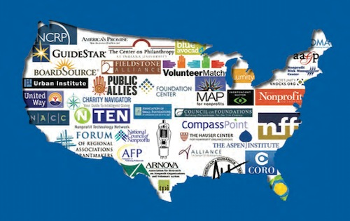

BTOP Data and News
We’ve been fervently tracking the BTOP (Broadband Technology Opportunity Program) awards process: 1st round winners are slowly dribbling out while the 2nd round application deadline looms a month away.
In addition to the application spreadsheets we’ve been updating, we’ve reached beyond what’s in the database to directly collect data from applications. A survey went out yesterday to 1100+ applicants who have either had their first round application turned down for funding or are still awaiting a decision. In collaboration with the New America Foundation, we developed a quick set of questions to track what feedback applicants can expect, and develop a deeper understanding of what applicants submitted beyond what’s currently publicly available. Because of fast approaching deadlines, the report will be available in 2 weeks.
Fortunately, some journalists are also digging into the granting process. Here are a few recently published articles:
- Tough Choices for Feds Giving out Broadband Money: With 2,200 broadband applications, competition for billions in stimulus dollars is intense - by Joelle Tessler
- Fiber Optics, Not Magic Beans: Rural Idaho hopes to liberate broadband through stimulus - by Gavin Dahl
Asked why Qwest sat out the first round, several sources suggested the nation’s most powerful companies won’t take any money that forces them to sign the government’s nondiscrimination policy–the rules state that grantees “not favor any lawful Internet applications and content over others.”
…
According to a loud chorus of applicants, Rep. Walt Minnick’s office took the lead in helping the Idaho dozen prepare applications.
“Although Walt voted against the stimulus bill, he recognized once it did pass, it was his job to get as much money for Idaho as possible,” Minnick spokesman John Foster said.
- Mapping out the Jedi Mind Trick - by Gavin Dahl
[Hannah Miller], the activist [national field director of the Media and Democracy Coalition], hopes the stimulus delivers funds to projects that improve rural access to affordable high-speed Internet. “There’s a different moral weight to these phone and cable companies than if they had, say, a peanut brittle monopoly. This is about access to information.”
“Our role is to try to encourage as many community partners to get involved as possible. Community involvement is what makes or breaks this thing. You’re asking folks to participate in something a great deal of people are intimidated by.”
- $7.2 Billion For Broadband Is Largely Unallocated - by Joel Rose (via Todd Wolfson at the Media Mobilizing Project)
“They aren’t leading, they aren’t following, and they won’t get out of the way,” says Craig Settles, author of Fighting The Next Good Fight, a book about broadband business strategy. He says the nation’s biggest telecom companies have generally decided not to apply for federal stimulus money.
“They’re not going to put proposals on the table because they don’t like the rules,” Settles says. “Yet they’re not going to cooperate with the entities that are going after the money.”
- More Legislators Question Idaho Education Network - by Sharon Fisher (via Gavin Dahl)
Honesty is such a lonely word
At the Transmission Project, you hear us talking about the concept of honest practice rather than best practice. We believe it is equally, if not more, instrcuctive to examine more than what worked. We want to know about surprises, the unexpected, even the failures.
I perked up when, in my RSS reader, I spotted this in a recent post at Museum 2.0:
What’s the best way to share information about your experiments–what worked and what didn’t? Publish.
There are many other fabulous reports out there to learn from, but there are far more languishing in file cabinets. I was a bit surprised as I worked on the book at how often I could get access to a evaluation report with some sleuthing and asking–and how infrequently those reports were publicly available in any form. Please, if you go to the time and expense of evaluating your institution’s projects, find a way to share what you’ve learned.
Nina Simon shares evaluation and research studies on participatory projects in museums. I highly recommend checking out these links as much of what you’ll find has great application in many public engagement efforts.
Check back here regularly for artifacts and stories from the projects we support at the Transmission Project. And let us know what you learn.
DC Community Broadband Summit
When:
February 26, 2010
Where:
Washington, DC Join area residents, businesses and thought leaders at the District’s first-ever Community Broadband Summit (DC-CBS)
-a public forum designed to address the city’s digital divide.
DC-CBS is a joint effort of the Office of the Chief Technology Officer (OCTO), DC Public Libraries (DCPL), the Department of Parks and Recreation (DPR), DC Public Schools (DCPS), and the Department of Employment Services (DOES), as well as Cricket Wireless and One Economy Corporation.
The goal is to bring together the ideas and resources of District residents and the business/non-profit community, to increase digital literacy. That means ensuring all residents have equal access to the Internet, as well as computer training and affordable hardware.
Knight Commission on service-led capacity building
Recommendation 12 of the Knight Commission on the Information needs of Communities in a Democracy lays out the framework for a “Geek Corps” along the same lines as our Digital Arts Service Corps.
Recommendation 12: Engage young people in developing the digital information and communication capacities of local communities.
Media habits of Americans vary greatly with age. Younger Americans, especially if relatively well-off, tend to integrate advanced information and communication technologies into their daily lives in ways that seem largely alien to their elders. To be an innovator in the social uses of digital media, it helps to have had early and lifelong experience. At the same time, many technologically savvy young
people have little connection to the ideas and challenges of local democracy. This uneven distribution of knowledge across the generations actually creates a unique opportunity.Imagine a “Geek Corps for Local Democracy” where, as a post-college opportunity, American youth volunteer to help connect a physical community to the networked infrastructure. They would be assigned to diverse communities to help local government officials, librarians, police, teachers, and other community leaders leverage networked technology. Geek Corps participants would teach community members how to use technology. They would help local leaders to understand technological shifts and how they can leverage new technologies for community practices. Participants from all the communities involved would be connected into a national network of participants to share best practices, develop collectively usable code, and build a network of information systems for local democracy.
Programs are already underway in which high school students volunteer to help with technology efforts. But the local nature of such initiatives means that there is little coordination among communities. A Geek Corps would weave together the local and the national through networks of passionate youth. Ideally, such a program would have the same stature as the Peace Corps or AmeriCorps, such that participants would be welcome into jobs with open arms. Yet, the real benefit for most youth would be a deep understanding of how different communities work and how democracy plays out at the local level. Those who invited Geek Corps participants to their community should relish the opportunity to help these youth understand local democracy and governance. The result is cross-generational civic education.
Geek Corps participants would need to have varying types of technological skills. The pay would not be overly generous. The unique quality of the opportunity would make up for the low level of income in the short-term. There would need to be a process for assessment to assure that local needs were met. A national staff could help coordinate local participants and provide a technological backbone to the project.
To work, this program will need support at both the local and national levels. It would make most sense for communities to fund a portion of the costs and for their contributions to be matched either by foundations, corporations, or the federal government. Local communities would also have to provide a structure for the Geek Corps participants to engage with the relevant community players.
To highlight the differences in our program and this recommendation: the focus of our program is upon community impact, rather than professional development (that’s just a beneficial side-effect). We try to engage individuals of all ages, backgrounds, education levels, and expertise (sometimes another geek isn’t the capacity that’s called for). Lastly, push back against the low wages: recommend nothing less than a living wage; it may not possible in the current environment but this work should not be undervalued.
John Nichols and the need for a media service corps
John Nichols, The Nation correspondent and co-founder of FreePress, speaks alongside Robert McChesney about the need for a service corps for journalism and public media—much like our own Digital Arts Service Corps. From Democracy Now! (2/4/2010).
Transcript:And we have in America now an Americorps, where we say to a kid who wants to teach, you can go into a community, an underserved, rural or urban community, and start teaching there, and the government will provide a little bit of a stipend, some support. Why not a News Americorps, where we send young people into communities to work at community radio stations, to work in—to develop news sites in underserved places, maybe to supercharge a high school radio station, something like that?
Fear and the internet
Cleaning up the office last week, I ran across a lovely historical classic from 1996: Using the internet for social science research and practice by Edward Kardas and Tommy Milford. In addition to lists of useful Gopher servers and WAIS databases, it has this nugget about attitude:
All of us are in a time of transition with tools like computers and the Internet. Because we grew up using other tools, we may be reluctant to learn new ones. Interestingly, if you watch young children—say, two- to four-years old—they seem to lack any fear of computers. They don’t view computers as being new and different, and computer use seems to come to them naturally. So, maybe it is best to approach computers the way your little brother or sister might, assuming that computers are just another part of your world, something to learn, explore, and use. In the end, the Internet is neither good nor bad, right nor wrong, scary nor pleasant. As with any tool, our feelings about it come from our success at using it. Once you learned to hit the nail and not your thumb, you felt more positive about hammers, didn’t you?
Nonprofit infrastructure and the organizations that build it

There is a lot of meat to the Nonprofit Quarterly’s “Study on Nonprofit and Philanthropic Infrastructure” (hat-tip Rosetta Thurman). The introduction from Elizabeth Boren, research director at the Urban Institute puts the infrastructure in perspective:
If I were to describe the network of organizations that supports the nonprofit sector, I would not use the word infrastructure, which connotes a fixed and unchanging support system. These organizations are hardly the static bones of the sector; rather, they are the interactive forces that transmit information and propel change. This network connects civil-society organizations through its hubs, which create opportunities for peer-to-peer learning and shared experiences as well as for improving practices, conducting and using research, and developing ethical standards. At their best, support organizations are propellants that drive organizations to excel. They promote an overarching view of the nonprofit sector’s role in society by articulating the collective challenges of organizations and their constituents and by developing alternatives to address these challenges.
What are the implications of this dynamic perspective? It puts the focus on how the support network connects a diversity of organizations and facilitates their interaction with the wider environment. The recent presidential campaign, whose Web revolution so engaged the young, illustrates these dynamics. Networks embody speed, flexibility, interactivity, and a high tolerance for volatility, negative feedback, and redundancy. Successful network hubs provide quality content and a variety of communication and engagement options.
Building on this idea of dynamism, both across the nonprofit sector as well as within our own public media infrastructure, is identifying the specific actions this network should enable:
To respond to this challenging environment in a rapid and well informed way, nonprofits of all sizes and shapes, but especially, the majority which are small or mid-sized, need the connective tissue of infrastructure to, among other things:
- restructure their practices, services, and organizations to fit a resource-scarce environment;
- identify and pursue available resources;
- track important trends in government and communities;
- identify potentially useful innovations in practice, financing, and organizational structure occurring elsewhere;
- engage in collective policy development and advocacy.
Sound a little familiar?
Digging deeper, the study clearly articulates one of the greatest challenges: “the nonprofit infrastructure lacks the reach to serve the vast majority of the sector which is made up of small to mid-size nonprofits, most of which are very local and very deeply woven into the fabric of their own communities.”
Fortunately, the Transmission Project is an outlier there, as well as here:
Most infrastructure organizations are not digital natives and need help in rethinking their design to include the most optimal use of new technological tools.
And here on Human Resources:
Many described the area of force concerns as behind the curve, with people and groups “playing around the edges” or addressing discrete issues such as executive transitions and recruitment. One interviewee suggests that the conversation has been too narrowly cast, and that discussions of the sector’s use of “human capital” should include ideas on how to effectively engage and retain unpaid as well as paid talent. This discussion is, no doubt, going to be played out loudly in the next few years as national initiatives based on service gain traction and steam.
Reinforcing our views that organizations are capable but under-resourced—locally designed solutions succeed if provided broadly based support—the study identifies an undermining perspective shift from asset to deficit orientations:
Over the past twenty years or so there has been an increasingly strident narrative that promotes the view that many or most nonprofits are dysfunctional and need to be fixed. A deeper look reveals that the financial and political markets which nonprofits must regularly negotiate are complex and difficult, requiring a variety of what Jim Collins calls high legislative leadership skills.
But unfortunately there is a counter-trend in the wider philanthropic community: ‘the increasing penchant among some foundations “to bypass nonprofits altogether in trying to achieve their goals.” ’
Lastly, what makes for a good infrastructure support organization:
Some respondents pointed out that among MSOs [Management Support Organizations], there are pockets of excellence, where the practice and thought leadership are exemplary. These organizations, they added, also tend to combine capacity building with research and publishing.
FCC Commissioner on the Open Internet and Social Justice
FCC Commissioner Mignon Clyburn delivered a great speech examining the positive impacts of net neutrality on communities of color at last week’s Minority Media and Telecommunications Council Summit:
I fear that if we miss the boat on this opportunity, the Internet will end up becoming media ownership 2.0. I do not buy the argument that all regulation is dangerous, and I am confident that you do not either. I believe in smart regulation, which is why, for example, we have begun a process that will account for reasonable network management. But I hope we can work together to create strong rules that do not cede control of the most significant communications advancement in our lifetimes. By sitting this one out, or worse, by throwing up roadblocks that will enable what is now “our” Internet to become “their” Internet, we simply would be reinstating the very kinds of imbalanced structures that we have been attempting for decades to dismantle in other contexts.
Download the full speech (PDF). Thanks to Rick Kaplan and Jessica Gonzalez for sharing this wonderful speech.
Broadband according to the FCC?

When we attended the FCC’s workshop last week, one of the handouts was the FCC’s consumer publication Broadband Brochure. While informative, the publication does not break any new ground definitely: broadband is defined as “faster than dial-up service and it doesn’t tie up your telephone line like dial-up often does”; nor metaphorically:
To better understand the differences between dial-up and broadband, it might help to envision the Internet as a pipeline for information. If the pipeline is narrow, less information can fit. Bigger pipes allow for increased and more complex information to flow back and forth – bringing content and information to you at faster speeds. Dial-up uses narrow pipes. Broadband uses increasingly fatter pipes that allow much more complex information to flow at faster speeds, including complex graphics and videos.
The glossary of terms in the back is of equivalent depth:
bandwidth - The capacity of your broadband connection to send and receive the data. The higher the bandwidth, the faster the transmission of data. Bandwidth is measured in bits per second.
blog - An online, chronicle journal; short for “weblog.”
download - To transfer a file or files from one computer to another, for example, from a server to your desktop computer. Download is the opposite of upload.
e-mail - Messages sent via the Internet. E-mail can be everything from simple messages or can contain pictures, video - even voice.
encrypted - Encrypted data is data that has been converted so it cannot be easily understood by unauthorized people.
instant message (IM) - A way of communicating with another Internet user by way of simple text-based chat .
IP address - A numeric code number assigned to the computers in a network. A static IP address is permanent. A dynamic address always changes every time you connect to the Internet.
Internet Service Provider (ISP) - A company that provides its customers access to the Internet.
modem - The device that connects your PC to the Internet.
social networking - An online community of people who are socializing with each other via a particular website.
Voice over Internet Protocol (VoIP) - A technology that allows you to make and receive calls over the Internet.
webcam - A simple video camera that connects to your computer and enables you to send live and recorded video as well as still pictures via the Internet.
WiFi - Wireless broadband. Available in many public locations.
Overall the booklet touts the benefits of broadband, but near the end waffles a bit: the section entitled “How can I get it” includes both dial-up and broadband; the “it” apparently referring to the Internet in general. Fortunately they do mention libraries, public computing centers and “retailers”, too.
Not to pick on the FCC, but if these issues require broad and substantial dialogue (as we believe they do), then the dialogue should be framed with meaningful and informative descriptions.
Third Annual Consumers Union Activist Summit
When:
February 9, 2010 - February 11, 2010
Where:
Washington, DC
Website:
http://events.consumersunion.org/ Join activists from all over the country at the Third Annual Consumers Union Activist Summit in Washington DC, February 9-11, 2010. Come meet other activists that share a passion for working on issues such as food/product safety, health care reform, patient safety, financial services and many more. If you want to learn how to bring about legislative action on state and federal levels that help protect consumers - this is your Summit.
This year’s Summit will feature an amazing line-up of speakers, workshops and networking opportunities.